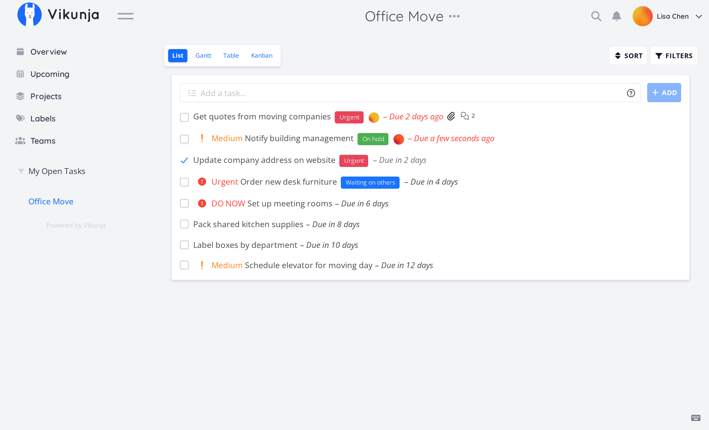
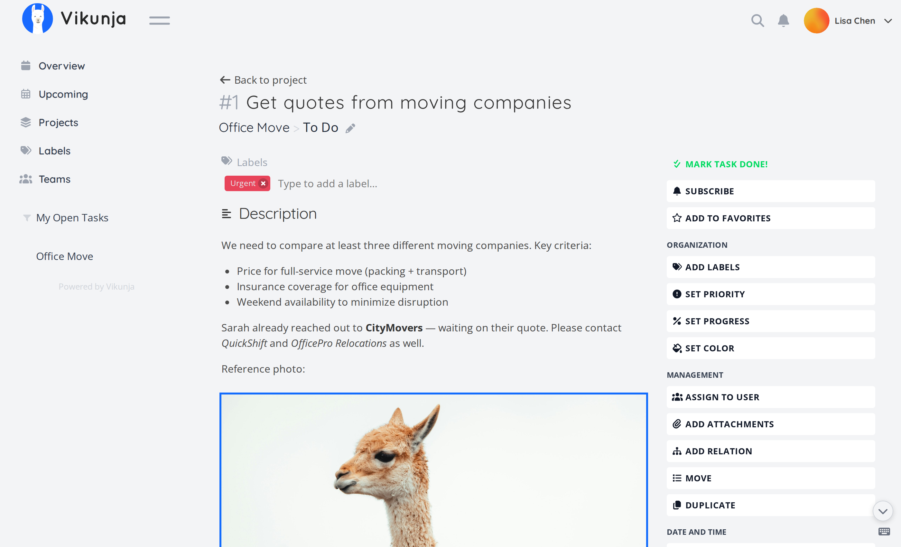
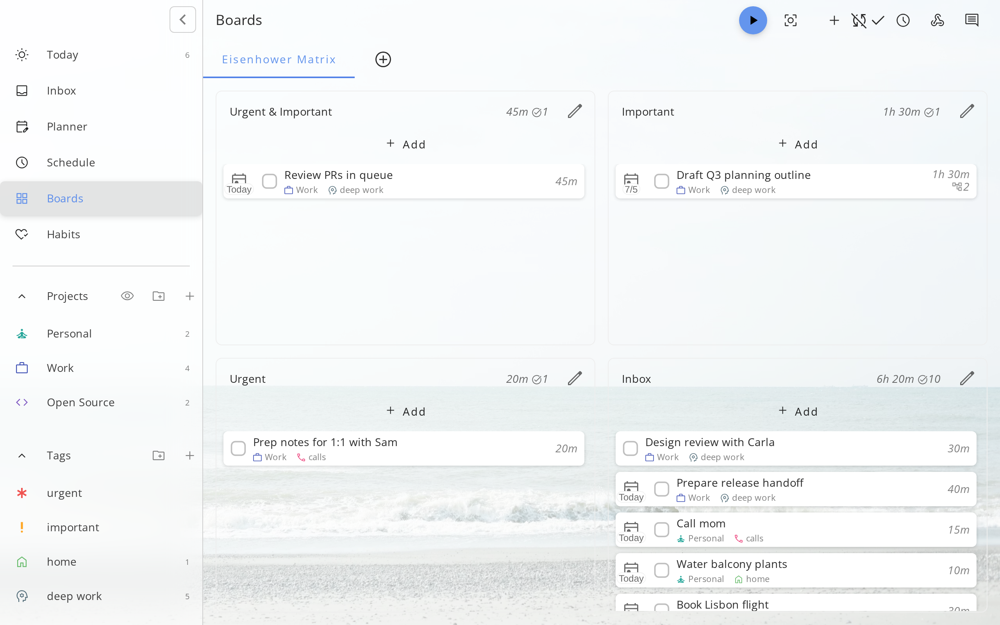
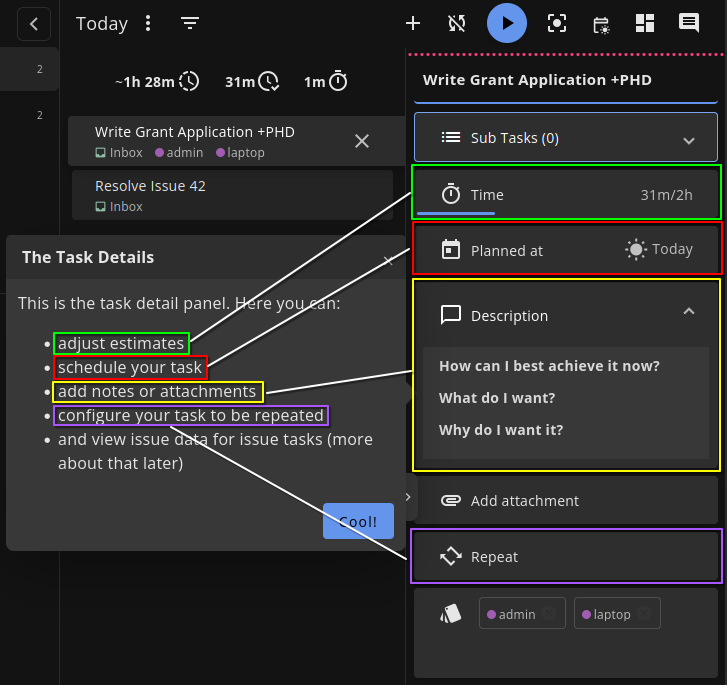
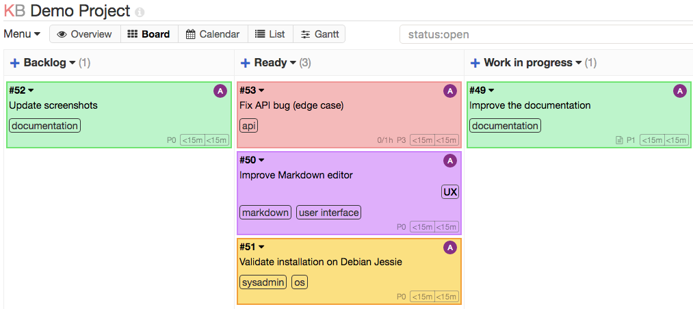

本页是已否决的第一轮参考。 查看第二轮：通用个人项目工作空间与实际图片 →
先选操作方式，不先套样式
下面是开源产品的官方截图，不是新一轮 AZCine 设计稿。点击图片可看原尺寸。只借鉴个人工作组织，不带入多人协作、团队审阅或整套技术栈。
1. Vikunja：选项目，直接看到可操作的清单
左边切项目，主区是任务列表，顶部就能添加；点击任务进入完整详情页。相比目前的“大项目卡片 → 概览 → 再找工作”，少一层中转。




适合借鉴
- 项目作为稳定切换入口，而非一屏巨大卡片。
- 打开项目直接开始新增、筛选、处理工作。
- 详情页把要求、资料和交付信息放在同一对象内。
不要照搬
- Teams、指派、订阅等团队功能。
- 一条任务只有一个截止日的简化：镜头仍保留三个独立交付节点。
- 图片中的颜色、字体或后端技术不因此成为产品选择。
2. Super Productivity：先处理今天，再按项目归类
强调 Today、Inbox、Planner 与 Projects 的关系。适合每天开工先安排工作的人；图中主区是四象限，不是“项目列表”。可以只借它的项目切换和快速任务操作，不必引入四象限或计时。

查看任务详情侧面板（原尺寸727×685）

适合借鉴
- 少写项目介绍，多展示“今天要做什么”。
- 任务创建与计划贴近列表，项目切换不打断工作。
需要权衡
- AZCine 已有“今天”页，照搬会造成两个相似入口。
- 计时、习惯、四象限都不是现有必需需求。
3. Kanboard：按待开始、进行中、完成组织工作
项目内直接看板，列表 / 日历 / 甘特作为视图切换。结构很直接，但官方界面较旧；仓库明确处于维护模式，不作为技术选型建议。

适合借鉴
- 一眼看工作堆在哪个阶段。
- 添加入口就放在工作列里。
需要权衡
- 不适合横向比较大量镜头的三个日期。
- BCOPY / BCOPY+ / FINAL 不能作为互斥看板列，它们不是单一状态。
没有作为主推荐的参考
AppFlowy 是 AGPL-3.0 开源工作空间，但此次取得的官网项目图带多人光标和营销合成效果，旧README的两张界面图链接返回404，因此不把它当作清晰的个人日常操作证据。查看该官网示意图。

Focalboard 官方仓库 README 明确写 currently not maintained，本次不列为首选。Kitsu / ftrack 前一轮已证明偏向团队制片，这轮只保留历史参考，不再拿它们主导个人工作台。
先确认这两个决定
项目操作方式：我倾向以 Vikunja 的“切项目后直接操作清单”为基础，去掉现在那层巨大项目卡片与重复概览；镜头行补缩略图，独立交付节点放在详情和交付视图。这只是建议，未修改项目页面。
目录：根目录只留下项目规则、README 与一个 index.html 入口；文档、当前原型、品牌、参考、测试和历史证据分开。每次测试单独输出，不继续把几百张截图堆在代码旁。
docs/ requirements.md · design-spec.md · decisions.md design/ 当前原型 HTML / CSS / JS assets/ brand/ research/ 参考与查证 tests/ 验证脚本 artifacts/ previews/ · validation/<run-id>/ archive/ 旧稿与冻结证据
完整英文目录方案 · 全部文件/目录名使用英文；界面和正文中文不变。不删除历史，不篡改旧报告哈希。